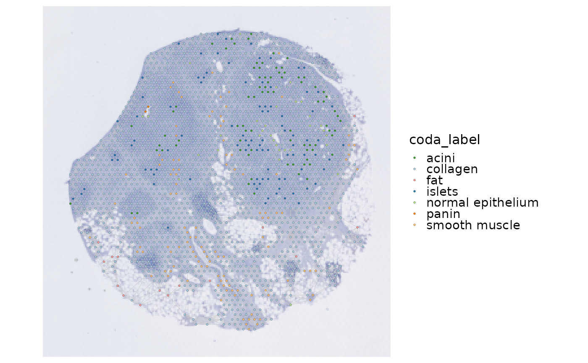

Plot a graph produced by [RunSpatialNetwork()]. The graph can be read from a Seurat object or supplied directly as `srt@tools$SpatialNetwork`.
Usage
SpatialNetworkPlot(
object = NULL,
res = NULL,
graph.name = NULL,
group.by = NULL,
edge.color = "grey80",
edge.linewidth = 0.2,
pt.size = NULL,
pt.alpha = 1,
palette = "Paired",
palcolor = NULL,
raster = FALSE,
raster.dpi = 300,
theme_use = "theme_spatial",
theme_args = list(),
image.scale = c("lowres", "hires")
)Arguments
- object
Optional `Seurat` object containing the graph and metadata.
- res
Optional plain result list from `object@tools$SpatialNetwork`.
- graph.name
Stored graph name. The active graph is used when `NULL`.
- group.by
Node column or Seurat metadata column used for coloring.
- edge.color, edge.linewidth
Edge appearance.
- pt.size, pt.alpha
Node appearance.
- palette, palcolor
Palette name or explicit colors.
- raster
Whether to rasterize only the node layer.
- raster.dpi
Node rasterization resolution.
- theme_use, theme_args
Theme used to style the plot. Default is `"theme_spatial"`.
- image.scale
Image scale factor matching the raster in `object`.
Examples
Restored example output generated on 2026-10-10 from SCOP 151e7134c. These historical examples have not been revalidated against the current release. Current usage and arguments are documented above.
data(visium_human_pancreas_sub)
spatial <- RunSpatialNetwork(
visium_human_pancreas_sub,
k = 6,
coord.cols = c("x", "y"),
verbose = FALSE
)
SpatialNetworkPlot(
spatial,
group.by = "coda_label",
edge.linewidth = 0.15,
pt.size = 0.8
)
